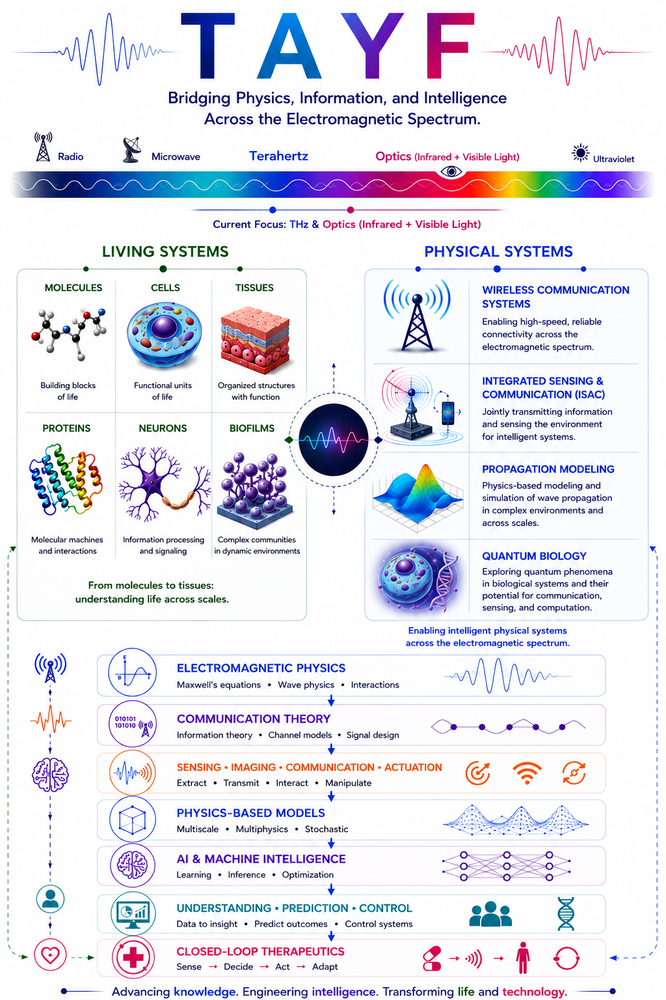

tayf
A Multidisciplinary Research Vision Exploring the Electromagnetic Spectrum from Physics to Intelligence....

about
I am a postdoctoral fellow in the Ultrabroadband Nanonetworking Laboratory at the Institute for Intelligent Networked Systems at Northeastern University, working under the supervision of Professor Josep Jornet.
My work centers on TAYF — using electromagnetic waves to sense, model, and control systems from proteins to 6G networks. It's the throughline connecting my papers, projects, and collaborations into one research vision.
education
Education
Ph.D. in Electrical and Computer Engineering
M.Sc. in Electrical and Computer Engineering (Highest Honors)
B.Sc. in Telecommunication Engineering (Highest Honors)
research
Current Research Projects
THz Intra-body Communication, Sensing, and Actuation
- Focus
- Physical-layer and propagation modeling for wireless nanonetworks operating inside biological tissue: THz channel characterization, wave–tissue interaction modeling, signal processing, and information-theoretic analysis of intra-body links.
- Impact
- Establishes the engineering foundations for implantable nanoscale wireless devices capable of real-time sensing and actuation at the molecular level, with applications in continuous health telemetry, closed-loop therapeutics, and future 6G body-area networks.
Near-field Wavefront Engineering: Communication and Sensing
- Focus
- Exploits near-field electromagnetic effects to unlock spatial degrees of freedom beyond far-field limits, enabling high-capacity THz links and super-resolved sensing.
- Impact
- Advances a system-level near-field THz framework applicable to dense wireless infrastructure (AI factories, intra-datacenter links) and sub-millimetre sensing, directly enabling the distributed ISAC architectures targeted by NSF and DEVCOM programmes.
In collaboration with Brown University and Rice University (United States)
EM Wave Propagation in Hydrogel-based Neural Tissue Scaffolds
- Focus
- Investigates electromagnetic wave propagation through riboflavin-crosslinked hydrogel media as a system-level design problem, characterizing how structured illumination shapes the resulting scaffold properties.
- Impact
- Establishes structured illumination as an engineering-controlled propagation variable, enabling reproducible scaffolds for neural tissue modeling and new routes for EM-based characterization of engineered biological media.
In collaboration with the University of Essex (United Kingdom)
Bacterial Intelligence and Biofilm-based Biocomputing
- Focus
- Characterizes EM wave propagation through biofilms and harnesses bacterial collective signal-processing for biocomputing and non-invasive infection sensing, integrating gene regulatory neural network models with 6G mMTC system design.
- Impact
- Expands molecular communication theory to living computational substrates, with relevance to biocomputing architectures, EM-based detection of antimicrobial-resistant biofilms, and bio-inspired intelligence for 6G network control.
In collaboration with the University of Nebraska–Lincoln (United States)
publications
2026 Publications
The complete, continually updated record is on Google Scholar.
- JSensing the Near-Field at Terahertz Frequencies: Structured Beams as the Missing Half of ISAC
- JNano-Bio Systems for Intra-Body Sensing, Actuation, and Communication in the Terahertz Band and Beyond
- JIntegrating Biological Intelligence into 6G mMTC Systems using Gene Regulatory Neural Networks
- CModeling Airy Beam Propagation for Intra-body Nanoscale Communication
honors
Honors, Grants & Awards
- 2026
Selected as an IEEE Antennas and Propagation Society Young Professional Ambassador
- 2025
Selected as a Rising Star for the Women in Engineering Workshop in the Asia Dean Forum
- 2025
Recipient of the Mojgan Daneshmand Grant, IEEE Antennas and Propagation Society
- 2024
Selected as an N2Women Rising Star in Networking and Communications by IEEE ComSoc
- 2023
Selected as Innovators Under 35 MENA Award recipient, MIT Technology Review Arabia
- 2023
School of Graduate Studies Conference Travel Grant, University of Toronto
- 2022
Introduced by the Principal of Massey College at the High Table Celebrating Women Leaders in Canada
- 2022
Doctoral Completion Award, University of Toronto — $10,000
- 2022
Selected as an EECS Rising Star, The University of Texas at Austin
- 2022
Appointed Junior Fellow, Massey College, University of Toronto
- 2022
Mitacs Globalink Research Award — $6,000
- 2022
Nominated for the Teaching Assistant Excellence Award, University of Toronto
- 2021
Research Expansion Grant, Photonics Innovation Center, University of Toronto — $10,000
- 2020
IEEE Toronto Section Appreciation of Service Award
Scholarships & Fellowships
- 2024
NSERC Postdoctoral Fellowship — $70,000 × 2
- 2023
Professor V. L. Henderson & M. Bassett Research Fellowship in Electrical Engineering, University of Toronto — $8,200
- 2023
Viola Carless Smith Research Fellowship in Electrical Engineering, University of Toronto — $10,000
- 2019
Ontario Graduate Scholarship for excellence in graduate studies (two consecutive cycles) — $10,000 × 2
- 2018
Scholar at Risk Fellowship, Massey College, University of Toronto — $10,000
- 2018
The Edward Rogers Scholarship, University of Toronto — Full funding
- 2011–15
Khalifa University Scholarship, BSc and MSc in Electrical Engineering — Full funding
teaching
Teaching
Courses Taught
- Detection and Estimation Theory (ECE1521)
- Probability and Statistics (ECE 286)
- Engineering Design and Innovation (ENGR 111)
- Digital Communication (ECCE 362)
- Communication Systems (ECCE 360)
- Signal Processing (ECCE 302)
- Applied Electromagnetics (ECCE 320)
Terahertz Communication Systems: Theory, Modeling, and Applications
academic service
Service & Outreach
- Session Chair, IEEE International Microwave and Antenna Symposium (IMAS), Jeddah, 2026.
- TPC Co-Chair, 13th ACM International Conference on Nanoscale Computing and Communication, St. John's, Canada, September 2026.
- Student Design Competition Chair, IEEE Wireless Power Technology Conference and Expo, Halifax, Nova Scotia, June 2026.
- Session Chair, IEEE International Conference on Communications, Satellite and Space Communications track — Beamforming and Physical Layer Design, Glasgow, May 2026.
- Track Chair for Signal Processing in Wireless Communication, IEEE Vehicular Technology Conference, Chengdu, China, October 2025.
- Session Chair, IEEE EuCAP — Propagation for Body Network and Bio Applications, Stockholm, March 2025.
- Guest Editor, special issue on Interconnecting Molecular and Terahertz Communications for Future 6G/7G Networks, IEEE Transactions on Molecular, Biological, and Multi-Scale Communications, 2025.
- TPC member: IEEE CCNC (Las Vegas, Jan. 2025), IEEE MILCOM (Washington, Oct. 2024), IEEE GLOBECOM (Cape Town, Dec. 2024).
- TPC Co-Chair, 11th ACM International Conference on Nanoscale Computing and Communication, Milan, Italy, October 2024.
- Panel Organizer, "Nanonetworking: Quo Vadis?", IEEE ICC, Denver, USA, June 2024.
- Participant, Mathematical Models in Biology: From Information Theory to Thermodynamics, Banff International Research Station, August 2022.
- Chair, IEEE Toronto Section ComSoc Chapter — including the IEEE Inter-Society Distinguished Lecturer Day (2025), IEEE Toronto ComSoc Distinguished Lectures, the "Moving the Dial" Women in STEM panel for International Women in Engineering Day, and the IEEE Toronto 5G Summit.
- Reviewer: IEEE TMBMC, IEEE TWC, IEEE TNB, IEEE VT.
Invited Talks & Podcasts
- Lightning talk, "Quantum Biology Forum," United Therapeutics headquarters, April 2026.
- Invited talk, "Talking to Proteins: Decoding the Nano-World Using THz-EM Signals", Wayne State University & IEEE WIE, February 2024.
- Featured on the Westcoast Women in Engineering, Science & Technology podcast on THz-induced protein interactions.
- Panelist, Women and Girls in Science, Aga Khan Museum, February 2023.
- Invited talk, Bioelectrodynamics Webinar Series (Prof. Michal Cifra) — THz effects on proteins, January 2023.
- NMIN HQP Research Presentations Series (10th Round), August 2022; awarded NMIN Travel Award.
Press Coverage
contact
Get in touch
For research, collaborations, or reviewing, reach me at h.mohammad@northeastern.edu, or connect via the links in the sidebar.
© Hadeel Elayan